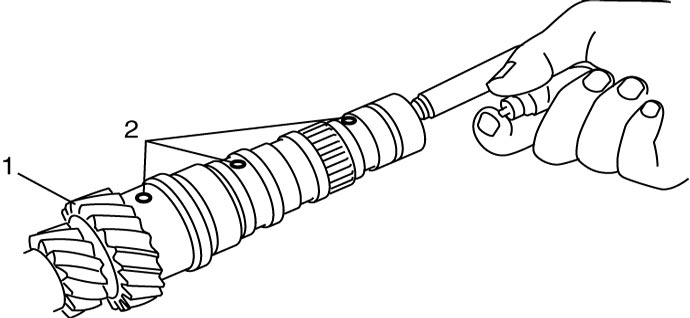

5B
| Input Shaft Disassembly and Reassembly |
Using an inappropriate hydraulic press or bearing puller could cause personal injury.
Use the hydraulic press and bearing puller which are capable of safely bearing a load of at least 5 tons (11,000 lbs).
NOTICE:
Supporting the gear on the concave side of the puller can cause damage to the gear.
Support the gear on the flat side of the puller.
Disassembly
1)Remove input shaft right bearing (2) and left bearing (4) from input shaft (1) using bearing puller (3) and hydraulic press.


 "Expand image")
| 5. | Metal stick |
2)Using special tool, remove circlip (1).

NOTE:
For smooth removal of circlip, it is recommended to correct tool tips to be flat.
 "Expand image")
3)Drive out 6th gear spacer (1) and 6th gear (2) all together using puller (3) and hydraulic press.

 "Expand image")
| 4. | Input shaft |
4)Drive out 5th and 6th synchronizer sleeve & hub assembly (1) together with 5th gear (2) using puller (3) and hydraulic press.

 "Expand image")
5)Take out 5th gear needle bearing from input shaft.
6)Drive out 5th gear spacer (2), 4th gear (3) and high speed synchronizer sleeve & hub assembly (4) together with 3rd gear (5) using puller (6) and hydraulic press.
 "Expand image")
| 1. | Input shaft |
7)Take out 3rd gear needle bearing from input shaft.
8)Disassemble synchronizer sleeve & hub assembly.
Reassembly
1)Clean all components thoroughly, check them for any abnormality and replace defective parts with new ones, if necessary.
2)Check clearance “a” between synchronizer ring (2) and gear (1) and replace defective part with new one, if necessary. Also, check gear tooth.
Clearance “a” between synchronizer ring and gear (4th, 5th and 6th)
Standard: 0.75 – 1.65 mm (0.030 – 0.064 in.)
Service limit: 0.4 mm (0.016 in.)
 "Expand image")
3)Put the synchronizer outer ring (1), inner ring (3) and the cone (2) together and then measure the step difference between the outer ring and the inner ring. And also check each chamfered tooth of gear and synchronizer ring and replace defective part with new one, if necessary. Also, check gear teeth.

Difference between synchronizer outer ring and inner ring (3rd)
Standard “b”: 1.0 – 1.4 mm (0.040 – 0.055 in.)
Service limit “b”: 0.5 mm (0.019 in.)
 "Expand image")
4)To ensure lubrication of input shaft (1), blow air into oil holes (2) and check that they are free from any obstruction.

 "Expand image")
5)Drive in right bearing (1) to input shaft (2) using special tool and hydraulic press.

 "Expand image")
6)Fit high speed synchronizer sleeve (4) to hub (3), and insert 3 keys (2) and springs (1) as shown in figure.
NOTE:
•No specific direction is assigned to high speed synchronizer sleeve or each key but it is assigned as assembly.
•Sizes of high speed synchronizer sleeve, hub, keys and springs are smaller than sizes of low speed ones.
•Sizes of high speed synchronizer sleeve, hub, keys and springs are smaller than sizes of low speed ones.
Synchronizer key installation position
 "Expand image")
| [A]: | 3rd gear side | B: | Key way |
7)Install 3rd gear needle bearing (4), apply oil to it, and then install 3rd gear (1) and synchronizer ring (2).
8)Drive in high speed sleeve & hub assembly (3) using special tool and hydraulic press.
NOTE:
•While press-fitting sleeve & hub, check that synchronizer ring key slots are aligned with keys (5) in sleeve & hub assembly.
•Check free rotation of 3rd gear after press-fitting sleeve & hub assembly.
•Synchronizer rings for 3rd and 4th are identical.
•Check free rotation of 3rd gear after press-fitting sleeve & hub assembly.
•Synchronizer rings for 3rd and 4th are identical.
 "Expand image")
| [A]: | 3rd gear side | B: | Long boss |
| A: | Key slots |
9)Drive in 4th gear spacer (1) using special tool and hydraulic press.
 "Expand image")
| 2. | Input shaft |
10)Install 4th gear needle bearing (2), apply oil to it, and then install 4th gear (3) and synchronizer ring (4).
11)Using the same special tool as in Step 9), drive in 5th gear spacer (1).
 "Expand image")
12)Install 5th gear needle bearing, apply oil to it, and then install 5th gear and synchronizer ring.
13)Fit 5th & 6th gear synchronizer sleeve (4) to hub (3), and insert 3 keys (2) and springs (1) as shown in figure.
NOTE:
•No specific direction is assigned to 5th & 6th gear synchronizer sleeve or each key but it is assigned as assembly.
•Sizes of 5th & 6th gear synchronizer sleeve, hub, keys and springs are smaller than sizes of high speed ones.
•Sizes of 5th & 6th gear synchronizer sleeve, hub, keys and springs are smaller than sizes of high speed ones.
Synchronizer key installation position
 "Expand image")
| [A]: | 5th gear side | B: | Key way |
14)Drive in 5th and 6th gear synchronizer sleeve & hub assembly (1) using special tool and hydraulic press.
 "Expand image")
15)Install 6th gear needle bearing (1), apply oil to it, and then install 6th gear (2) and synchronizer ring (3).
16)Using the same special tool as in Step 14), drive in 6th gear spacer (4).
 "Expand image")
17)Select circlip (1) that will make thrust clearance “b” of spacer 0.1 mm (0.004 in) or less and install it.
 "Expand image")
Available circlip thickness
| Clearance “a” | Applicable circlip |
|---|---|
| 1.810 – 1.860 mm (0.0713 – 0.0732 in.) |
1.81 mm (0.0713 in.) |
| 1.860 – 1.910 mm (0.0732 – 0.0751 in.) |
1.86 mm (0.0732 in.) |
| 1.910 – 1.960 mm (0.0751 – 0.0771 in.) |
1.91 mm (0.0751 in.) |
| 1.960 – 2.010 mm (0.0771 – 0.0791 in.) |
1.96 mm (0.0771 in.) |
| 2.010 – 2.060 mm (0.0791 – 0.0811 in.) |
2.01 mm (0.0791 in.) |
| 2.060 – 2.110 mm (0.0811 – 0.0831 in.) |
2.06 mm (0.0811 in.) |
| 2.110 – 2.160 mm (0.0831 – 0.0850 in.) |
2.10 mm (0.0826 in.) |
| 2.160 – 2.210 mm (0.0850 – 0.0870 in.) |
2.16 mm (0.0850 in.) |
| 2.210 – 2.260 mm (0.0870 – 0.0890 in.) |
2.19 mm (0.0862 in.) |
18)Using the same special tool as in Step 14), press-fit left bearing (1).
 "Expand image")